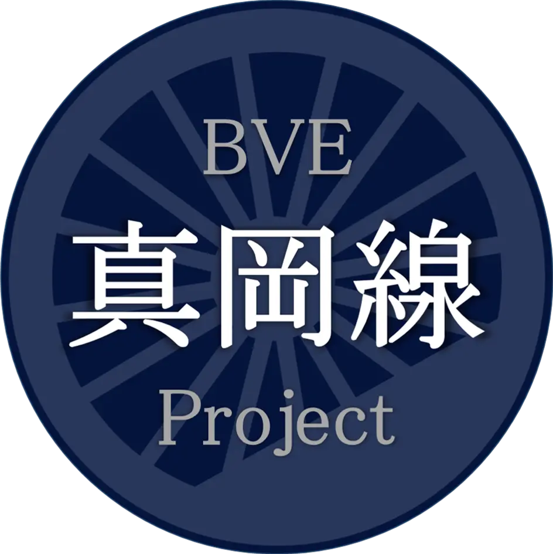

自己紹介

せきたん / sekitan
真岡線沿線で生まれ育ち、物心ついた時にはSLの虜になっていました。鉄道マニアというよりは真岡線マニアという方が適切かもしれません。
制作中の作品

BVE 真岡線 Project
BVE Trainsim向けに、真岡鐵道真岡線のデータを制作しています。細部にまでこだわり、リアルな運転体験ができるよう日々開発を進めています。
完成には膨大な時間を要しますが、制作の過程も含めてお楽しみくださいますと幸いです。